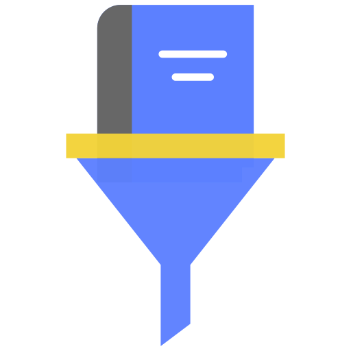

Semantic Bookmark Organizer
Choose where bookmarks are read from before analysis. This browser uses the Chrome bookmarks API (works in Chrome, Edge, Brave, and other Chromium browsers). Imported HTML uses a file you exported from Bookmark Manager (⋮ → Export bookmarks).
Offline — Free and private. Bookmarks are sorted with built-in folder rules (social, shopping,
learning, dev, and more) plus optional custom JSON. Nothing leaves your device.
Online — Same offline rules first; then hard-to-classify items (low score or still
“Uncategorized”) are sent in small batches to your AI provider. Only title + URL are shared.
Free tier with an API key from Google AI Studio. Paid providers (OpenAI, Claude, etc.) are not listed here because they require billing — Gemini works reliably for bookmark sorting.
All listed models are on Gemini’s free API tier. Gemini 2.0 Flash is the recommended default for speed and quality on large libraries.
Stored only in this browser (chrome.storage.local). Get a key from
your provider.
When enabled, bookmarks on the same website with very similar titles are treated as duplicates (not just identical URLs). Example: “React docs” and “React Documentation” on react.dev — only the newer one is kept. Turn off if you want to keep near-duplicate titles on purpose.
Keys stay on this device only.
Offline mode never leaves your machine. Online mode sends batched title/URL pairs to Google Gemini when you add a key. Export produces HTML you import yourself — bookmrkd does not delete or overwrite bookmarks automatically. Full privacy policy
Removes your saved Gemini API key. Rules and imported HTML are not deleted.
Offline mode uses host-based rules for common sites, then a large legacy classifier. Top-level folders include Learning, Productivity, Web Development, Career & Jobs, Entertainment, Archive, Security, Research, and AI & Machine Learning. Unmatched links go to Archive › Uncategorized (Online mode can refine those).
Custom rules are merged with built-in rules (not replaced). First matching rule wins
(higher priority first). Example: send all links on your company wiki to a “Work” folder.